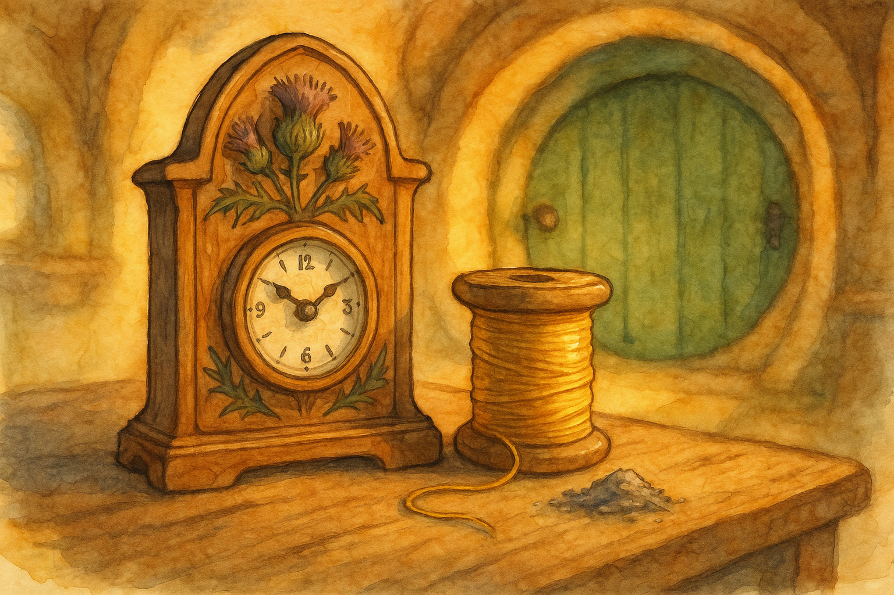

Fourth Age, in the Shire when the last apples are stored and the evenings grow long
In the Shire, where folk keep time by meals and weather and the look of the road, there are not many clocks worth speaking of. Yet there is one small clock—carved with thistles, stubborn as the plant itself—that is said to keep time only for the honest. This is the tale as it is told by the fires in Michel Delving, and by the benches outside the Green Dragon when someone is late and has no good excuse.
Long after the King’s messengers had stopped riding so often through the Westfarthing, when peace had become ordinary again (as it ought), there lived in Overhill a clockmaker named Tobold Bunch—not the famous Tobold of the Old Toby, mind you, but a later Bunch with a knack for small gears and a habit of listening too closely.
He was the sort of hobbit who would pause at a gate to hear whether it creaked in sorrow or in spite; and when a kettle began to sing he could tell if it was impatient, or merely glad to be useful. Such folk are uncommon, but you will meet one now and then, and you had best mind your words around them.
Now Tobold made fine clocks for folk who fancied themselves grander than they were: mantel-clocks with little brass moons, and tall clocks with solemn faces like magistrates. They ticked and chimed and kept excellent time, though most of their owners used them chiefly to boast. Tobold did not begrudge them their vanities (a hobbit must take bread where he finds it), but he did his best work when he was making something small enough to tuck into the palm.
One autumn evening—thin light, yellow leaves, smoke lying low in the hedges—Tobold was closing his shutters when he heard a tapping at the round back door of his workshop. Not a proper knock, mind, but a tap-tap, like a twig against glass when the wind cannot decide its direction.
He opened the door, expecting a neighbour’s child with a broken toy, or perhaps a cat with opinions. Instead he found, on the threshold, a little parcel wrapped in brown paper and tied with a thread the colour of old gold.
There was nobody in the lane. Only the hush of coming frost, and a blackbird that watched him as if it had business of its own.
Tobold brought the parcel in, set it upon his worktable, and did not untie it at once; for he had been taught (as all sensible hobbits are) that one should never be in a hurry when something arrives unasked. He lit a lamp first, poured himself a thimble of tea, and said aloud—as if to the empty room—“If this is a trick, it is a poorly explained one.”
Then he loosened the golden thread.
Inside was a small block of wood, dark and close-grained, with a scent like wet earth after rain. Alongside it lay a pinch of ash wrapped in linen, and a slip of paper with three lines written in a hand that looked at once careful and impatient:
Make a clock that keeps time for truth.
Carve it with thistles, for thistles remember.
Bind it with this thread, and set it with this ash.
Tobold read the lines twice, then a third time, because he could not decide whether to laugh or to be offended. Clocks, he knew, kept time for no one at all. They kept time for themselves—steady, indifferent—and the world did what it pleased around them.
Yet the wood was fine. The ash had a strange weight to it, as if it had been burned from something that had not wished to burn. And the golden thread… the golden thread caught the lamplight and held it, as if it were reluctant to let it go.
So Tobold did what hobbits always do when presented with a mystery: he muttered about nonsense, and then he set about it.
He worked for three days. He carved the wood into a small mantel-clock no taller than a kettle, with a rounded belly and a face like a quiet moon. Around its edges he carved thistles in relief—sharp leaves, stubborn stalks, and the little burrs that stick to your sleeve and will not come off until they have had their say.
For the hands he used plain black iron, for anything too fine would have made the thing seem precious, and this clock (he felt, though he did not yet understand why) did not want to be precious. It wanted to be right.
When the gears were set and the spring wound, he opened the linen and sprinkled the ash into the hollow behind the face. It fell like grey snow. Then he took the golden thread and tied it once around the little clock’s middle, not tight enough to bite, but firm enough that it felt like a promise made with a handshake.
As he pulled the knot, the clock ticked once—loud as a footstep in a quiet hall.
“Well,” Tobold said, because he could think of nothing better, “let’s see what you make of us.”
He set the clock upon his mantel and went about his life.
At first it behaved like any other clock. It ticked politely. It chimed at the hours with a sound like a spoon against a cup. It ran only a minute slow by the end of the day, which is more than can be said for many hobbits. Tobold began to believe the parcel had been the work of some bored Took, or perhaps a Brandybuck with too much time and too little sense.
Then came the first test.
A young hobbit-lass named Daisy Puddifoot came to Tobold’s shop with a broken kitchen clock and an earnest face. “Master Bunch,” she said, “could you mend it by tomorrow? I’ve promised my aunt I’ll be at hers for supper, and if I’m late she’ll fret, and if she frets she’ll forget to salt the stew, and if she forgets to salt the stew my uncle will sulk, and if he sulks…”
Tobold held up a hand. “Peace. I can mend it by tomorrow. Midday.”
“Oh thank you!” Daisy cried, and hurried away.
Tobold meant well. But that evening a cartwheel snapped in the lane and he spent two hours helping old Hamfast Twofoot set it right. Then the river mist crept in and his joints ached, and after supper he fell asleep in his chair with his spectacles half on and his mind half off.
In the morning he woke late. He rushed to the shop, and the little thistle-clock on his mantel said it was only a quarter past nine.
“Nonsense,” Tobold muttered, for he could see the sun already high. He looked at the window. He looked at the shadow of the apple tree. He looked at his own stomach, which was complaining like a lawyer. By all the natural signs it was nearly eleven.
He hurried on nonetheless, half believing the clock and half not, and he told himself, as he worked, that Daisy would not mind a little lateness. “It’ll be midday soon enough,” he said aloud. “Near enough is as good as exact, for a hobbit.”
At half past twelve by the sun, Daisy arrived. Her cheeks were pink with worry. “Master Bunch,” she said, “you promised midday.”
Tobold opened his mouth to explain, and then stopped. For as he spoke the excuse in his head—It wasn’t really my fault; it was the cartwheel; it was the mist; it was sleep—the little thistle-clock on the mantel made a sound like a cough and its hands shuddered backward, as if pulled by an unseen finger.
“I did,” Tobold said slowly, feeling his ears grow hot. “And I am late.”
The clock ticked once, satisfied.
Daisy’s shoulders eased. “Thank you for saying so,” she said, surprising him. “My aunt will still fret, but at least I can tell her I waited on an honest delay.”
After she left, Tobold sat down and stared at the clock as if it might offer him a biscuit by way of apology.
From that day on, the thistle-clock began to show its nature. It would not keep time for anyone who tried to borrow it with a lie.
If a hobbit said, “I’ll be there in ten minutes,” when he meant twenty, the clock would simply stop—dead still, hands fixed like stubborn feet. If someone said, “I never touched the pie,” with crumbs on his waistcoat, the clock would run fast until it seemed the whole afternoon had fled, leaving him blinking in guilt at a darkening window.
But if a hobbit said, “I mean to try, though I cannot promise,” the clock would tick as calmly as rain on leaves.
Word of it spread, as words always do in the Shire: quickly, quietly, and with additions. Folk came to Tobold’s shop to look at it. Some came to test it, grinning. Some came to accuse it of witchcraft (which is a fine word to use when you cannot bear a plain truth). And some came—these were the interesting ones—because they were tired of the easy kind of deceit that makes everything slightly crooked.
One winter evening, when the lanes were hard with frost and the stars looked near enough to pluck like berries, there came to Tobold’s door a stranger: a tall man in a travel-stained cloak, with a brooch like a leaf of silver. He stood awkwardly in the low doorway, as tall folk always do, and smiled as if he had forgotten how to be at ease.
“Good evening,” he said. “I was told there is a clock here that tells the truth.”
“Clocks don’t tell anything,” Tobold replied, because habit is habit. “They only tick.”
“Ah,” said the stranger, “but some ticking is a kind of speech.”
He stepped inside, looked at the thistle-clock, and did not touch it. That, Tobold noticed, was the first polite thing he had done all day.
“May I ask,” the stranger said, “what you bound it with?”
Tobold hesitated. It seemed foolish to say golden thread aloud, as if he were a child showing off a treasure. Yet he found himself answering truly: “A thread that came with the wood. Like old gold. I don’t know where it was spun.”
The stranger nodded as if that was the only possible answer. “And the ash?”
“A pinch.” Tobold swallowed. “It felt like a thing that had not wanted to burn.”
At that the stranger’s eyes went distant. “Yes,” he said softly. “That is often how it feels.”
He stayed only a little while. He asked no more questions. Before he left, he placed a hand on the mantel beside the clock—close enough to feel its ticking, not close enough to claim it—and said, “It is a good thing, Master Bunch. A small thing, but good. The Shire has need of such small goods.”
When he had gone, Tobold stood in the doorway and watched the road until it vanished into dark. The thistle-clock chimed once, though it was not the hour.
In the years that followed, folk began to borrow the clock in earnest. A mother borrowed it to sit beside her son when he confessed a mischief that had grown too large for his pockets. Two cousins borrowed it when they divided an inheritance and wished, for once, not to quarrel over a spoon. A lad borrowed it to propose to the lass he loved, because he feared the words might come out prettier than his intentions.
And always the clock did the same: it kept time with any honest tongue, and refused to keep time with a crooked one. It did not punish, exactly. It did not strike, or shout, or shame. It merely let the day slip its grip from those who tried to hold it by false fingers.
At last, on an evening much like the one when the parcel first came—yellow leaves, smoke low in the hedges—Tobold found another parcel on his threshold, tied with the same thread. Inside was nothing but a slip of paper.
Time is a gift.
Keep it by truth, not by grasping.
Return the thread when you are done.
Tobold sat at his table and held the note until the lamp burned low. Then he untied the golden thread from around the clock and set it in the parcel, and he poured the pinch of ash out into the garden where thistles grew behind his shed. The thistle-clock, freed of its binding, ticked three times—quietly, like a friend clearing his throat before parting—and then fell forever still.
Tobold did not mourn it as one mourns a loss. He mourned it as one mourns a lesson finished: with gratitude, and a little worry that he might forget it when the world grew noisy again.
Yet folk say that even now, when the Shire is very quiet and a promise is being made with particular care, you may hear a single tick somewhere—no louder than a raindrop on a pane—and if you listen closely you will find your words becoming plainer, and your heart a shade more steady.
— Bilbo